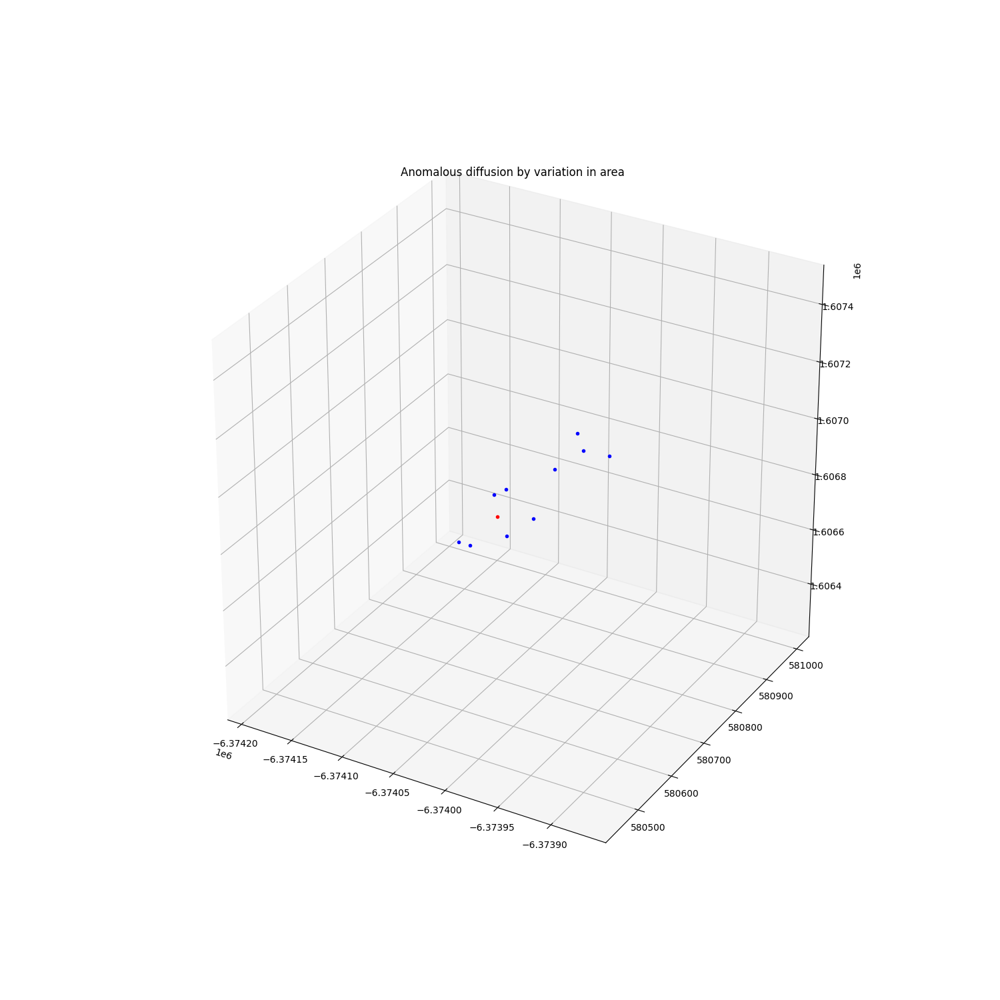

Note
Click here to download the full example code
Using the heartbeat for dynamics¶

Out:
MC-iteration 1/10
MC-iteration 2/10
MC-iteration 3/10
MC-iteration 4/10
MC-iteration 5/10
MC-iteration 6/10
MC-iteration 7/10
MC-iteration 8/10
MC-iteration 9/10
MC-iteration 10/10
With heartbeat
---------------------------------- Performance analysis ---------------------------------
Name | Executions | Mean time | Total time
----------------------------------------------+--------------+---------------+--------------
Orekit:get_frame | 20 | 1.15871e-05 s | 0.00 %
Propagator:convert_time | 10 | 1.71280e-04 s | 0.02 %
Orekit:propagate:construct_propagator | 10 | 8.56638e-05 s | 0.01 %
Orekit:propagate:set_forces | 10 | 7.64970e-01 s | 81.44 %
Orekit:propagate:steps:step-handler:getState | 3600 | 4.80489e-05 s | 1.84 %
Orekit:propagate:steps:step-handler | 1930 | 1.30633e-04 s | 2.68 %
Orekit:propagate:steps | 10 | 1.72836e-01 s | 18.40 %
Orekit:propagate | 10 | 9.39027e-01 s | 99.97 %
total | 1 | 9.39323e+00 s | 100.00 %
-----------------------------------------------------------------------------------------
No heartbeat
---------------------------------- Performance analysis ---------------------------------
Name | Executions | Mean time | Total time
----------------------------------------------+--------------+---------------+--------------
Orekit:get_frame | 2 | 1.12057e-05 s | 0.00 %
Propagator:convert_time | 1 | 1.56641e-04 s | 0.02 %
Orekit:propagate:construct_propagator | 1 | 7.79629e-05 s | 0.01 %
Orekit:propagate:set_forces | 1 | 7.51503e-01 s | 82.82 %
Orekit:propagate:steps:step-handler:getState | 360 | 2.31107e-05 s | 0.92 %
Orekit:propagate:steps:step-handler | 193 | 7.84595e-05 s | 1.67 %
Orekit:propagate:steps | 1 | 1.54614e-01 s | 17.04 %
Orekit:propagate | 1 | 9.07223e-01 s | 99.98 %
total | 1 | 9.07434e-01 s | 100.00 %
-----------------------------------------------------------------------------------------
import numpy as np
import pyorb
import matplotlib.pyplot as plt
from mpl_toolkits.mplot3d import Axes3D
from astropy.time import Time
from sorts.propagator import Orekit
from sorts.profiling import Profiler
orekit_data = '/home/danielk/IRF/IRF_GITLAB/orekit_build/orekit-data-master.zip'
class MyOrekit(Orekit):
def heartbeat(self, t, state, interpolator):
A = float(1.0 + 0.5*np.random.randn(1)[0])*self.force_params['A']
self.propagator.removeForceModels()
self._forces['drag_force'] = self.GetIsotropicDragForce(A, self.force_params['C_D'])
self.UpdateForces()
prop = MyOrekit(
orekit_data = orekit_data,
settings = dict(
heartbeat=True,
drag_force=True,
),
)
orb = pyorb.Orbit(M0 = pyorb.M_earth, direct_update=True, auto_update=True, degrees = True, a=6600e3, e=0, i=69, omega=0, Omega=0, anom=0)
#area in m^2
A = 2.0
#change the area every 1 minutes
dt = 60.0
#propagate for 6h
t = np.arange(0, 6*3600.0, dt)
#for reproducibility
np.random.seed(23984)
states = []
ph = Profiler()
ph.start('total')
prop.profiler = ph
for mci in range(10):
print(f'MC-iteration {mci+1}/10')
state = prop.propagate(
t,
orb.cartesian[:,0],
epoch=Time(53005, format='mjd', scale='utc'),
A=A,
C_R = 1.0,
C_D = 2.3,
)
states += [state]
ph.stop('total')
print('With heartbeat')
print(ph.fmt(normalize='total'))
p = Profiler()
p.start('total')
prop.profiler = p
#Reference simulation without force modifying
prop.set(heartbeat=False)
states0 = prop.propagate(
t,
orb.cartesian[:,0],
epoch=Time(53005, format='mjd', scale='utc'),
A=A,
C_R = 1.0,
C_D = 2.3,
)
p.stop('total')
print('No heartbeat')
print(p.fmt(normalize='total'))
fig = plt.figure(figsize=(15,15))
ax = fig.add_subplot(111, projection='3d')
ax.plot([states0[0,-1]], [states0[1,-1]], [states0[2,-1]], ".r", alpha=1)
for mci in range(len(states)):
ax.plot([states[mci][0,-1]], [states[mci][1,-1]], [states[mci][2,-1]], ".b", alpha=1)
ax.set_title('Anomalous diffusion by variation in area')
plt.show()
Total running time of the script: ( 0 minutes 10.810 seconds)